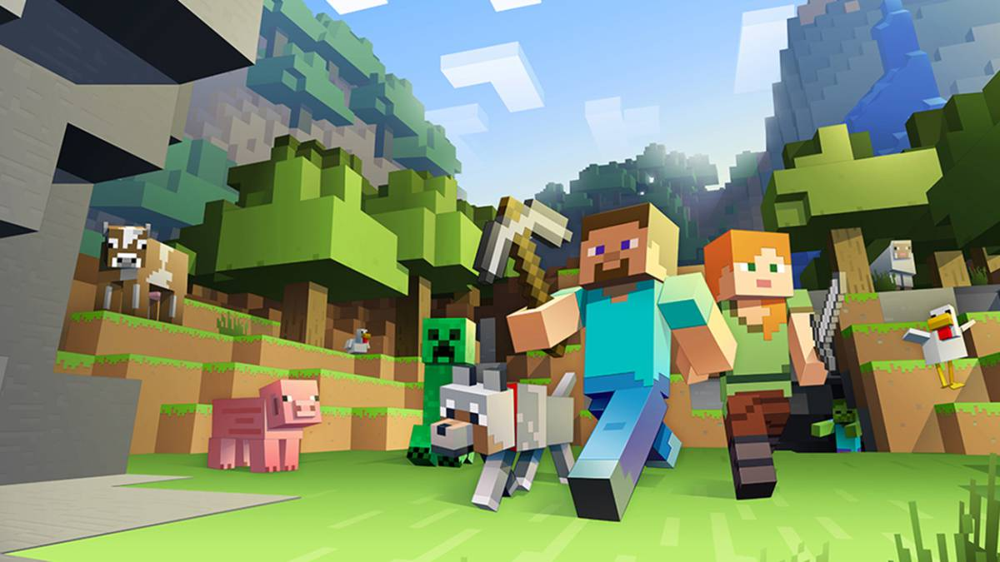

Tuve la dicha de
colaborar mano a mano con Mark Zuckerberg
mientras creabamos nuestra ya famosa red social Facebook. Tuvimos
muchas complicaciones a la hora de diseñarla, pero ya todos conocemos el resultado.
Lanzamos la plataforma en Febrero de 2004 y se mantiene activa hasta día de hoy.
Aunque se utilizan varias tecnologías para el desarrollo y funcionamiento de Facebook,
tales como Cassandra, Linux, Hive, etc...
Yo me centré en el desarrollo del diseño utilizando HipHop PHP, el cual es pilar fundamental para
sostener
la plataforma debido a que casi todo el sistema se basa en el.
Tuve la dicha de
colaborar mano a mano con Mark Zuckerberg
mientras creabamos nuestra ya famosa red social Facebook. Tuvimos
muchas complicaciones a la hora de diseñarla, pero ya todos conocemos el resultado.
Lanzamos la plataforma en Febrero de 2004 y se mantiene activa hasta día de hoy.
Aunque se utilizan varias tecnologías para el desarrollo y funcionamiento de Facebook,
tales como Cassandra, Linux, Hive, etc...
Yo me centré en el desarrollo del diseño utilizando HipHop PHP, el cual es pilar fundamental para
sostener
la plataforma debido a que casi todo el sistema se basa en el.
Minercraft
 Este es un videjuego de construcción de mundo abierto, es uno de los juegos más utlizados actualmente ya que tiene una extensa jugabilidad Fue diseñado en su totalidad con Java, aunque en estos momentos las nuevas versiones estan hechas en C++. Fue lanzado el 17 de Mayo de 2009 por mi colega Markus Persson, mejor conocido como Notch. Descargalo aquí
Portafolio Robby Leonardi
Mi amigo Robby, necesitaba realizar su propio portafolio para darse a conocer y me pidio algo de ayuda para el proceso, combina animaciones con un diseño colorido y fuera de serie, el mejor portafolio que haya visto, grande Robby. Robby subio el portafolio a la red a mediados de 2013. puedes visitarlo aquí